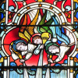

Le Ménage ès Feuvres,
St. Ouën.
Lé 14 dé juîn, 1975.
 Moussieu l'Rédacteu,
Moussieu l'Rédacteu,
Dès mes p'tits jours j'ai ouï pâler d's Anges. Manman avait l'habitude dé liéthe sa "Nourriture de l'Ame" en haut, et i' m'sembl'ye qué j'la ouaï acouo dithe "J'voudrais êt' un Ange, un ange du Bouôn Dgieu!" en liêsant. Et quand vînt l'temps d'aller à l'Êcole du dînmanche à l'Églyise dé St. George, et tch'i' fallait rester pour lé sèrvice à onze heuthes, quand l'Minnistre liêsait la Collecte pour la Fête de l'Annonciâtion d'la Vierge Marie, je l'ouiyais dithe "Par l'env'yêthie d'un ange j'avons apprîns l'Încarnâtion dé Tan Fis", et dans l'Êvangile (sélon St. Luc, Chapitre 1, Vèrset 26) i' liêsait: "l'Bouôn Dgieu env'yit l'ange Gabriel dans eune ville dé Galilée, app'lée Nazareth". Êtant tchuthieux d'ma sorte, jé c'menchais à mé d'mander tchi sorte d'pèrsonnes tch'il' 'taient, l's Anges. Et quand v'nait la Fête de St. Michel et tous les Anges, où'est qu'la Collecte nouos dit, "O Dgieu êtèrnel, tch'as êtablyi et règlié les divèrs Minnistéthes des Anges et d's hoummes dans un ordre admithabl'ye", et qu'l'Êpitre (Apoc. XII-7) nouos dit qué "Y'eût eune bataille au Ciel, Miché et ses Anges combattaient contre lé Dragon" et qué l'Dragon 'tait l'Satan et tch'i' pèrdit la bataille et qu'li et ses Anges fûdrent chassés du Ciel, j'vis bein qué l's Anges sont en même temps les m'sagièrs du Bouan Dgieu et les soudards du Rouoyaume des Cieux, et tch'i' y'en a d'bouans et d'mauvais dépis qué l'Satan en a étout.

Eune anmie m'dit qu'oulle 'tait êtonnée qué l's Anges né sont pon des femmes. Oulle avait tréjous pensé tch'il' en 'taient viyant qu'en portrait et estatue i' sont montrés auve des longues blianches robes et faches sans barbes, mais quand j'lî ramémouaithis qu'lus noms sont des noms d'hommes, comme Michel, Gabriel et Raphaël, ou m'dit qu'ou n'avait janmais rêalîsé tch'il' 'taient si bein connus qu'nou sait même lus noms. Pourtant, la Bibl'ye nouos en donne eune histouaithe bein întérêssante, car l's Anges sont mentionnés chent-huit fais dans l'Ancien Testament, et chent souoxante-chîn fais dans l'Nouvieau!
Ch'tait un Ange, env'yé par lé Bouan Dgieu, tchi sauvit Daniel d'êt' machacré par les lions dans la fosse dans tchi qu'Nébucadnetsar l'avait fliantchi (Daniel VI-22), et ch'tait un Ange, étout, tchi sauvit Sçadrac, Mesçac et Habed-Négo d'êt' brûlés à mort dans l'fourné où'est tchi l's avait fliantchis (Daniel III-28).
 Dans l'deuxième vèrset du vîngt-huitième chapitre dé l'Êvangile sélon St. Matchi, i' nouos est dit qué quand Marie Magdelaine et l'aut' Marie allîdrent à la sépultuthe du Seigneur, i' iut un grand trembliément d'tèrre quand un Ange descendit du ciel et vînt rouôler la pièrre tchi bouchait l'entrée d'la sépultuthe, et qu'sa fache 'tait comme un êpart, et qu'san vêtement 'tait blianc comme la né. Et l'onzième vèrset du quatrième chapitre dé la même Êvangile nous dit qué quand Jésû fut tenté par lé Dgiâbl'ye sus l'haut d'la montangne, et qu'Jésû l'env'yit s'faithe quatorze à la pliaiche dé l'obéyi, l's Anges vîndrent lé soulagi et l'consoler.
Dans l'deuxième vèrset du vîngt-huitième chapitre dé l'Êvangile sélon St. Matchi, i' nouos est dit qué quand Marie Magdelaine et l'aut' Marie allîdrent à la sépultuthe du Seigneur, i' iut un grand trembliément d'tèrre quand un Ange descendit du ciel et vînt rouôler la pièrre tchi bouchait l'entrée d'la sépultuthe, et qu'sa fache 'tait comme un êpart, et qu'san vêtement 'tait blianc comme la né. Et l'onzième vèrset du quatrième chapitre dé la même Êvangile nous dit qué quand Jésû fut tenté par lé Dgiâbl'ye sus l'haut d'la montangne, et qu'Jésû l'env'yit s'faithe quatorze à la pliaiche dé l'obéyi, l's Anges vîndrent lé soulagi et l'consoler.
Lé douzième vèrset du vîngt-tch'ième chapitre dé l'Êvangile sélon St. Jean nouos dit qu'Marie vit deux Anges, habilyis en blianc, dans la sépultuthe du Seigneur, iun à la tête et l'autre ès pids d'la pliaiche où'est qué l'corps dé Jésû avait r'posé. Et l'vîngt-traisième vèrset du vîngt-quatrième chapitre dé l'Êvangile sélon St. Luc nouos raconte qué les femmes tch'avaient 'té à la sépultuthe dîdrent ès Apôtres qué des Anges lus avaient annoncé qué l'seigneur 'tait vivant.
Quand St. Paul 'tait en prison dans l'temps du Rouai Hérode, condamné à mort (Les Actes XII-1 à 10) et enchaîné entre deux soudards dans un cachot, un Ange du seigneur vînt lé qu'si dans la niet et l'condisit hors dé la prison. St. Paul èrconnut tout d'suite qué ch'tait un Ange tchi l'avait dêbarrassé d'ses chaînes sans rêvilyi les soudards à ses côtés et tchi l'avait sauvé d'la mort, et dans l'deuxième vèrset du treizième chapitre dé s'n Êpitre ès Hébreux, i' nouos dit: "Noubliez pon l'hospitalité, car ch'est par lyi qué tchiqu's'uns ont louogi d's Anges sans l'saver!"
Eh bein, l'hospitalité des campangnards Jèrriais est bein connue, et ch'est à bein près seux qué dans les vièrs temps nouos anchêtres ont louogi d's Anges sans l'saver. Mais au jour d'aniet i' y'a pus d'voleurs et d'malfaîteurs qué d'Anges par les c'mîns et il est prudent d'êprouver à dêcouvri l'identité du mendgian d'vant lî'ouffri l'hospitalité, mais tch'est tchi sait? I' s'pouorrait tch'i' y'a un Ange ou deux par les c'mîns étout, car lé Bouan Dgieu né nouos a pon oubliés ouaithe qu'un tas d'nous pathaîssent l'aver abandonné. Ch'est en tchi l'hospitalité vaut p't-êt' acouo la peine dé prêsèrver, comme eune vertu par lé p'tit nombre d'campangnards Jèrriais tchi sont acouo ancrés dans l'Île. Et i' n'y a qu'à Li d'mander pour qué l'Bouan Dgieu env'yîsse un ange pour soulagi l'chein tch'est dans la peine!
George d'La Forge
 |
 |
 |
 |
 |
 |
 |
 |
Viyiz étout:


{kind=link}